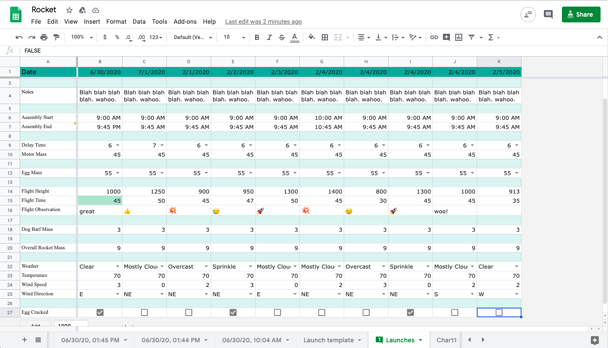

I created the Rocketry Launch Spreadsheet to make recording and analyzing launch data easier.
The first step I took to begin creating the Rocket Spreadsheet was to get all my ideas out of my head and onto paper. I decided to use my iPad so that I could both type up notes and also draw diagrams.

This is what the paper launch sheet looked like. It took a long time to write out each data entry, especially with cold hands that couldn't hold a pencil very well. In addition, there were moments where a team member's handwriting was not the best, resulting in data that couldn't be read.

I decided to first convert the paper version into a list on a spreadsheet. The paper version acted as a guide for what data entries I wanted. I also added some more entries that I thought would be helpful to keep track of.

Once I had the initial data entries down, I added empty cells in between certain entries to make it easier to read. I also changed the color to a more pleasing turqoise.
